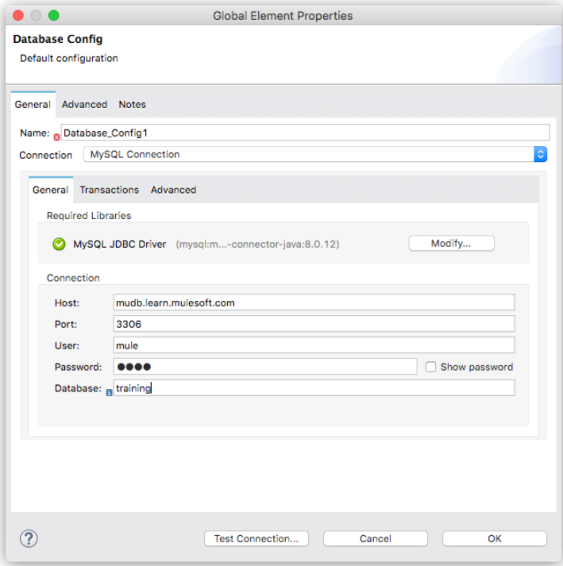
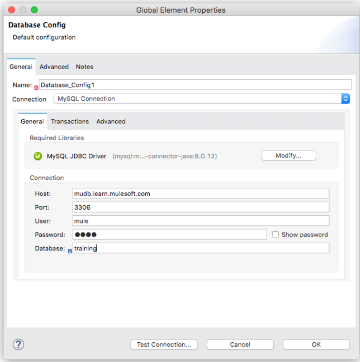
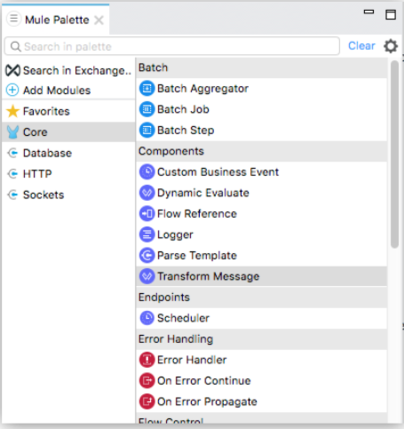

mule应用程序开发教程
1、mule的核心功能
mule应用程序的核心功能是将数据源从一种格式转换为另外一种格式并输出。
可以使用 Transform Message 组件的拖放界面将数据从一个字段或格式映射到另一个字段或格式，或者可以在 DataWeave 脚本中手动编写映射。
我们通常在 Studio 或 Design Center 中构建 Mule 应用程序，甚至可以在 XML 中手动编写 Mule 应用程序配置。
2、第一步：创建一个Mule 4项目
创建将包含您的 Mule 应用程序的项目。
1. 打开 Anypoint Studio，然后选择File > New > Mule Project。
2. 将项目名称设置为dw-tutorial4-flights-ws.
3. 保留所有其他默认值，然后选择“完成”以创建项目。
完成后，查看Package Explorer窗口以查看新项目的内容。
3、 第二步：创建和配置 Mule 4 应用程序
现在我们将添加从 API 获取数据所需的元素，并使用 DataWeave 将其转换为不同的结构。
1. 添加 HTTP 侦听器操作以侦听 American Flights API。在 Mule Palette 中，选择 HTTP 以显示 HTTP 操作，并将 Listener 操作拖到画布上。
如果你不能看到mule调色板东西，打开项目文件dw-tutorial4-flights-ws.xml中src/main/mule的Package Explorer中的文件夹。
2. 双击 Listener 操作以显示其属性选项卡，然后单击绿色加号以添加新配置。
3. 在 HTTP 侦听器配置对话框中，添加以下值：
host：0.0.0.0
port：8081
4. 单击确定保存这些更改并关闭对话框。
5. 在 Listener 的 General 选项卡中，将Path:字段更改为/flights。您的更改会自动保存。
6. 在 Mule Palette 中，选择Add Modules以显示模块和连接器的列表，然后将 Database 连接器拖到 Mule Palette 的左侧。可能会要求您选择一个版本。选择最新版本。
 7. 现在数据库连接器位于 Mule Palette 中，您可以看到它的操作。将 Select 操作拖到流中。
8. 让我们配置数据库操作以侦听来自 MuleSoft 示例 MySQL 数据库的响应。单击 Select 运算符以显示其属性选项卡，然后单击添加按钮（绿色十字）打开 Database Config 对话框。
9. 在对话框中选择或输入 Mule 的示例数据库值：
Connection：MySQL Connection
host：mudb.learn.mulesoft.com
port：3306
user：mule
password：mule
database：training
10. 仍在 Database Config 对话框中时，选择Configure > Add Maven dependency。
11. 在“选择 Maven 依赖项”对话框中，mysql-在“搜索 Maven 中心”搜索字段中输入。
12. mysql:mysql-connector-java从显示的项目中选择。
13. 选择完成返回到数据库配置对话框

14. 选择测试连接。您应该会收到一条Test connection successful消息。如果没有，请返回执行步骤并查找错误。
15. 选择确定返回到数据库配置对话框。
16. 创建一个从 Training: American Flights API 返回所有航班的查询。
（1）如果它尚未打开，请单击“选择”操作以显示其属性选项卡。
（2）在查询字段中添加一个选择语句：SELECT * FROM american。您的更改会自动保存。
17. 到目前为止，要测试您的配置，请运行该项目。您可以在定义流的画布中右键单击，然后选择Run Project dw-tutorial4-flights-ws。
18. 查看控制台选项卡，当应用程序运行时，打开您的 REST API 客户端。
19. 在客户端，向 发送请求http://localhost:8081/flights/。此时，应用程序返回一条500 Server Error消息，因为它无法处理从查询到美国航班 API 的数据。在训练的下一部分期间向流添加转换组件时，此错误已得到解决。
现在应用程序已设置，是时候将一些数据转换为 JSON，以便需要 JSON 的服务可以使用这些数据。
保持Mule 应用程序运行以避免意外创建可能阻塞应用程序中指定端口的孤立进程。
7. 现在数据库连接器位于 Mule Palette 中，您可以看到它的操作。将 Select 操作拖到流中。
8. 让我们配置数据库操作以侦听来自 MuleSoft 示例 MySQL 数据库的响应。单击 Select 运算符以显示其属性选项卡，然后单击添加按钮（绿色十字）打开 Database Config 对话框。
9. 在对话框中选择或输入 Mule 的示例数据库值：
Connection：MySQL Connection
host：mudb.learn.mulesoft.com
port：3306
user：mule
password：mule
database：training
10. 仍在 Database Config 对话框中时，选择Configure > Add Maven dependency。
11. 在“选择 Maven 依赖项”对话框中，mysql-在“搜索 Maven 中心”搜索字段中输入。
12. mysql:mysql-connector-java从显示的项目中选择。
13. 选择完成返回到数据库配置对话框

14. 选择测试连接。您应该会收到一条Test connection successful消息。如果没有，请返回执行步骤并查找错误。
15. 选择确定返回到数据库配置对话框。
16. 创建一个从 Training: American Flights API 返回所有航班的查询。
（1）如果它尚未打开，请单击“选择”操作以显示其属性选项卡。
（2）在查询字段中添加一个选择语句：SELECT * FROM american。您的更改会自动保存。
17. 到目前为止，要测试您的配置，请运行该项目。您可以在定义流的画布中右键单击，然后选择Run Project dw-tutorial4-flights-ws。
18. 查看控制台选项卡，当应用程序运行时，打开您的 REST API 客户端。
19. 在客户端，向 发送请求http://localhost:8081/flights/。此时，应用程序返回一条500 Server Error消息，因为它无法处理从查询到美国航班 API 的数据。在训练的下一部分期间向流添加转换组件时，此错误已得到解决。
现在应用程序已设置，是时候将一些数据转换为 JSON，以便需要 JSON 的服务可以使用这些数据。
保持Mule 应用程序运行以避免意外创建可能阻塞应用程序中指定端口的孤立进程。
4、 第三步：创建和测试 DataWeave 数据转换
现在我们有一个 Mule 应用程序可以运行并监听 Training: American Flights API，我们将添加一个 Transform Message 组件并使用 DataWeave 拖放界面来定义从 Mule 对象到 JSON 的转换。
1. 在 Mule Palette 中，选择 Core 并找到 Transform Message 组件。

2. 将 Transform Message 拖放到画布中 Select 操作的右侧。
3. 单击 Transform Message 组件以显示图形视图和源代码视图。
左侧是输入和输出元数据结构的图形视图。它们之间的映射由线和中心的节点表示。
右侧是相同结构和映射的代码视图。代码视图和图形视图保持同步。
4. 在代码视图中，将第 2 行中的输出类型从 更改application/java为application/json，并将第 4 行和第 5 行中的括号替换为payload。
5. 保存更改以重新部署项目。
6. 通过发送您的REST客户端的GET请求测试这种变化：GET http://localhost:8081/flights。
只需在 DataWeave 脚本中使用两个字，您就已将 Mule 对象转换为 JSON。
现在，我们将根据我们提供的示例将现有数据从 API 映射到数据结构。此示例表示第二个服务需要如何使用来自 Training: American Flights API 的数据。
7. 在转换消息的输出面板中，选择定义元数据以打开选择元数据类型对话框。
8. 选择添加以打开创建新类型对话框。
9. 输入american_flights_json并选择创建类型。
10. 在选择元数据类型对话框中，将类型设置为JSON。
11. 在类型下方的下拉列表中，将Schema更改为Example。
12. 将以下内容复制并粘贴到文件中，并将其保存在本地计算机或环境中。命名文件american-flights-example.json。
[{
"ID": 1,
"code": "ER38sd",
"price": 400.00,
"departureDate": "2016/03/20",
"origin": "MUA",
"destination": "SFO",
"emptySeats": 0,
"plane": {
"type": "Boeing 737",
"totalSeats": 150
}
}, {
"ID": 2,
"code": "ER45if",
"price": 345.99,
"departureDate": "2016/02/11",
"origin": "MUA",
"destination": "LAX",
"emptySeats": 52,
"plane": {
"type": "Boeing 777",
"totalSeats": 300
}
}]
13. 在“选择元数据类型”对话框中，单击带有三个点的按钮导航到您刚刚创建的文件并选择它。
14. 选择选择以保存您的更改。现在您可以在 DataWeave 界面中看到输入和输出数据结构。
15. 让我们开始映射字段以创建转换。
通过将它们从输入部分拖到输出部分来映射具有相同名称的字段：
ID
price
totalSeats
请注意在您拖放时写入最右侧窗格中的 DataWeave 代码。
映射其余数据：
toAirport 到 destination
takeOffDate 到 departureDate
fromAirport 到 origin
seatsAvailable 到 emptySeats
planeType 到 type
拖动code1和code2到code
请注意在您拖放字段以创建转换时生成的 DataWeave 代码。如果您犯了错误，例如将输入字段放到错误的输出字段上，代码视图会标记错误。只需右键单击输出字段并选择删除字段映射即可删除错误。
16. 让我们添加一些示例数据，这有助于我们预览映射结果。（如果您愿意，可以跳过此步骤）。在代码视图上选择Preview，然后单击Create required sample data to execute preview链接。
17. 在输入面板负载选项卡中，将所有问号替换为数据。这些值也应显示在“输出”面板中。从 Studio 主菜单中选择文件 > 全部保存。
18. 我们已经完成了转换的定义，现在让我们测试一下。假设您已经按照之前的建议运行了 Mule 应用程序，打开您的 REST 客户端并向 API 发送另一个请求：GET http://localhost:8081/flights
请注意，数据的结构如“输出”面板中所述，而不是我们在之前的查询中看到的遵循“输入”窗格结构。